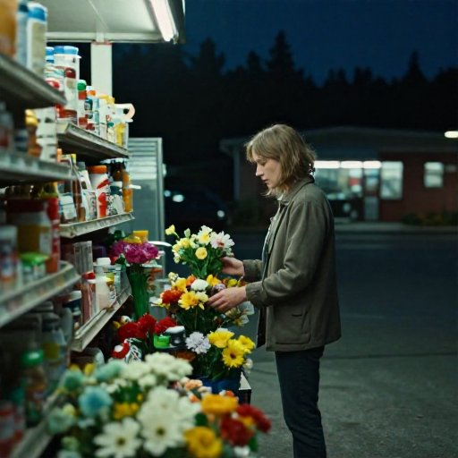

a talking beet sitting upright in a folding chair, a Tang dynasty scholar's garden: bamboo, a rock, a pavilion, a man who has nowhere to be, the pale blue of a phone screen in total darkness, Powell & Pressburger — color as emotion, dance, Technicolor myth, wide aperture, masterpiece
P300X2 · mesh (2,2) · Blackhole
Image 2 — FLUX.1-schnell (13:29 UTC, 58s gen)
0d33adcf · 104 KB
a wrestler nobody has thrown in seven years lifting his hands before the match, a Hellenistic library at Alexandria — scrolls floor to ceiling, one scholar looking for one line, cool blue of pre-dawn, oil painting, 8K, bokeh
P300X2 · mesh (2,2) · Blackhole · 0.17.0-8c48a10

Image 3 — Z-Image-Turbo (15:42 UTC, 12s gen)
6eb7dae8 · 49 KB
Mrs. Dalloway buying flowers herself, because Scrope Purvis thought she looked so young, a 7-Eleven at 1am in a suburb you grew up in, strobe at 5fps, Kelly Reichardt — quiet Pacific Northwest, working-class women, long empty pause, award-winning, wide aperture
a woman buying canned goods in a supermarket that smells faintly wrong, an Aboriginal sacred site in the Kimberley: a rock painting 40,000 years old, no railing, sodium yellow of a freeway overpass at night, Larisa Shepitko — Soviet spiritual intensity, white light, female heroism in snow, long exposure, professional photography